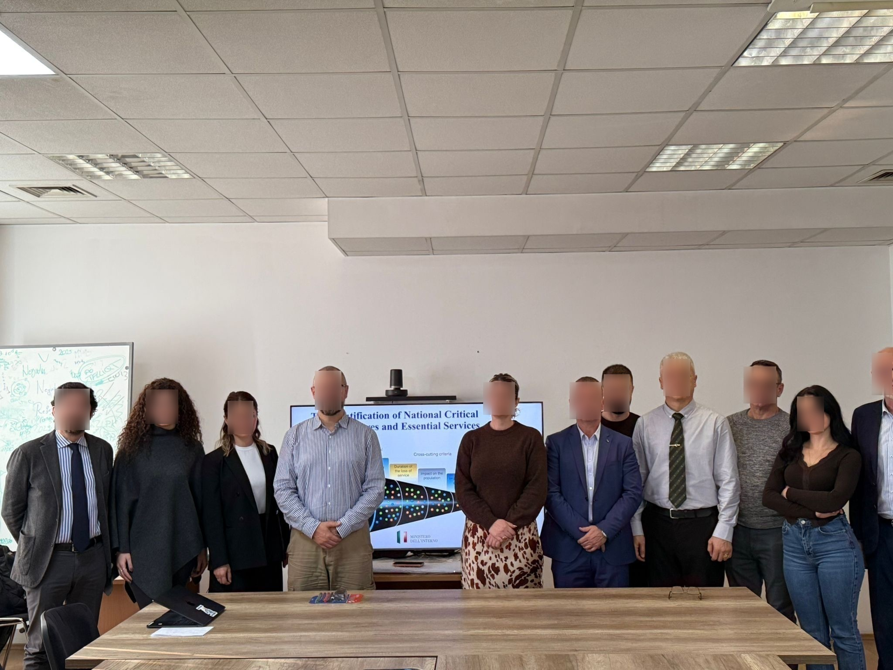
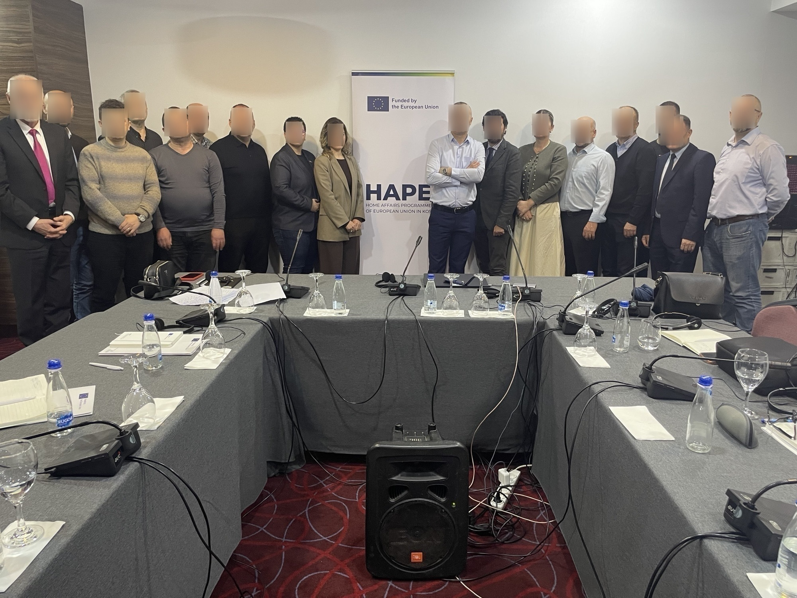
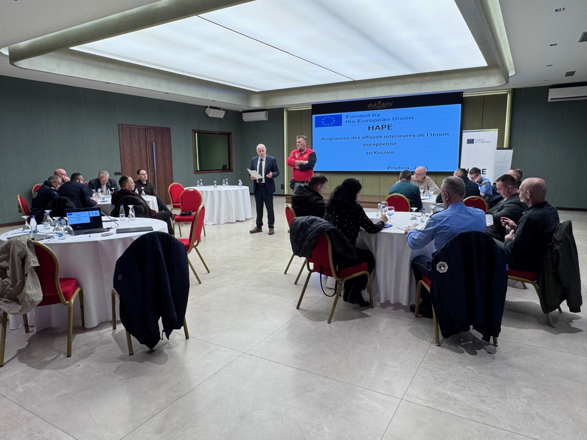

News
SUPPORT PROVIDED BY HAPE PROJECT IN 2026
- January to April 2026: Strengthening Critical Infrastructures Protection in Kosovo


In January 2026, the HAPE Project launched an important initiative aimed at strengthening the protection of Critical Infrastructures (CI) in Kosovo through a structured Basic Training program for institutional staff. The training began on 12 January and will run until 24 April 2026, bringing together the division of critical infrastructure within the department of public safety at the MIA and key institutions responsible for safeguarding critical infrastructures.
Participants in this program include representatives from the Ministry of Internal Affairs (MIA), Kosovo Police (KP), the Emergency Management Agency (EMA), the Ministry of Defense, the Ministry of Economy, the Ministry of Environment, as well as a Private Security Company active in the field of CI protection. The training is designed to enhance cooperation, coordination, and practical understanding among institutions that play a role in protecting vital national systems and services.
During the training, special attention was given to the National Risk Assessment process, helping institutions better identify potential threats and vulnerabilities and define appropriate protective measures for the national CI plan. In parallel, participants are also reviewing the draft Law on Critical Infrastructure, discussing its practical implications and sharing institutional perspectives that may contribute to its further development.
Another key component of the training is strengthening the interinstitutional coordination mechanism, which is essential for effective communication, information sharing, and joint action among relevant authorities and sectorial bodies.
The training also introduces participants to the main requirements of the EU Directive 2022/2557 on the resilience of critical entities, as well as the NIS 2 Directive related to cybersecurity and network resilience. Through this initiative, the overall goal is to ensure strong institutional cooperation and comprehensive support for the protection of Critical Infrastructure in Kosovo.
- HAPE Training Sessions on Conflicts of Interest (26-30 January 2026) and Protection of Whistleblowers (9-13 February 2026)



As part of its action aimed at strengthening and implementing the Integrity Plan, the HAPE project organised two training sessions for the eight regions of the Kosovo Police, focusing on conflicts of interest and whistleblower protection. More than 200 police officers participated in these two sessions. Interpretation in Albanian and Serbian was also provided by the project. For the delivery of these training sessions, the HAPE project engaged an expert from Civipol, who provided technical and operational expertise based on European Union standards and best practices. The objective of the trainings was to enhance participants' understanding of the legal, ethical related risks, and to promote a culture of integrity, transparency and accountability within the Kosovo Police.
Training Content
1. EU definition of conflicts of interest and whistleblower framework
The training started with a presentation of the European Union definition of conflicts of interest, including the key principles applicable to public officials. In parallel, the European and national frameworks on whistleblower protection were presented, with particular emphasis on rights, safeguards, institutional obligations and internal and external reporting channels.
2. Participant engagement and identification of risk situations
Initial interaction with participants was ensured through simple and practical questions based on everyday professional situations, encouraging reflection and highlighting the potential existence of conflicts of interest or situations that may require reporting. Attention was given to the declaration of conflicts of interest and to the role of whistleblowers in preventing and detecting integrity breaches.
3. Knowledge assessment – multiple-choice questionnaire (MCQ)
A multiple-choice questionnaire (MCQ) was used to assess participants' understanding of:
- the identification of conflicts of interest;
- declaration obligations;
- reporting mechanisms and whistleblower protection.
4. Practical approach – scenario-based exercises
Scenario-based practical exercises enabled participants to:
- distinguish between an ethical breach, a conflict of interest, and a situation requiring whistleblowing;
- analyse facts and legally qualify the situations presented;
- determine the appropriate measures and sanctions, as well as the reporting procedures to be activated while ensuring the protection of whistleblowers.
Conclusion
The training sessions generated active participation and constructive exchanges. They strengthened participants' capacity to prevent, identify and manage conflicts of interest, as well as to understand and apply reporting mechanisms and whistleblower protection, thereby contributing to the effective implementation of the Integrity Plan, in line with European Union standards and best practices. The feedback received from the Kosovo authorities has been very positive, highlighting the relevance, practical value and operational impact of the training sessions.